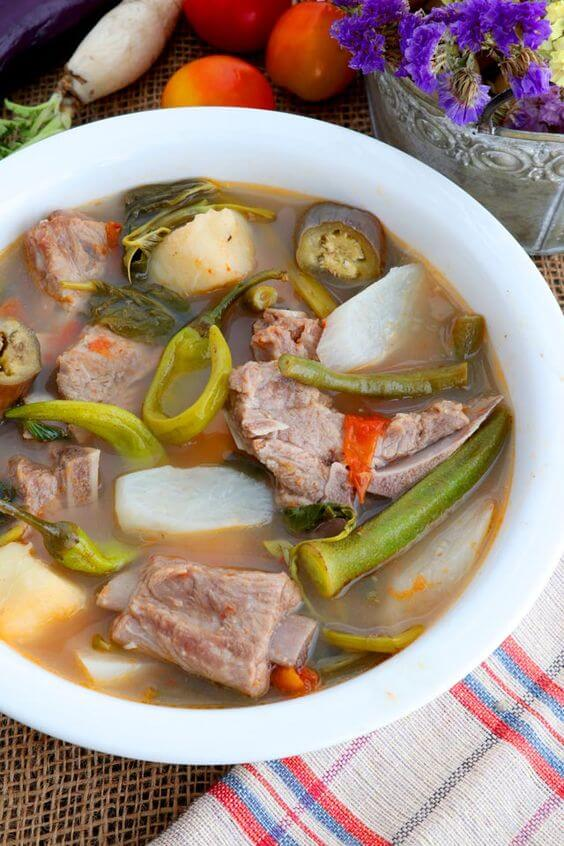
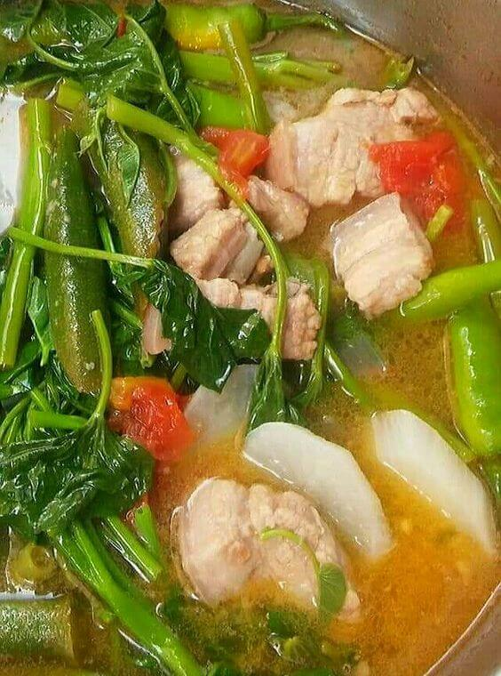

Sa malawak na repertoryo ng mga lutuing Pinoy, isa sa mga nagpapakilig at nagpapalasa sa ating mga panlasa ay
ang walang kamatayang Sinigang. Ito ay isang pagkaing asim-sarap na sumisimbolo sa kultura at pagkakakilanlan
ng mga Pilipino.
Ang salitang "Sinigang" ay nagmula sa salitang Tagalog na "singgang," na nangangahulugang "pampaasim." Ito ay
isang lutuing sabaw na karaniwang niluluto gamit ang mga sangkap tulad ng baboy, hipon, isda, manok, o baka,
na pinatataba ng mga paboritong gulay tulad ng kamatis, kangkong, labanos, gabi, at sitaw. Ang pangunahing
sangkap na nagbibigay ng asim sa Sinigang ay ang tamarind o sampalok, ngunit may iba pang alternatibong asim
tulad ng kalamansi, miso, at iba pang mga souring agents na maaaring gamitin.
Ang Sinigang ay hindi lang basta isang putahe; ito ay isang pagsasama-sama ng mga alaala, tradisyon, at
pagsasama ng mga pamilyang Pilipino. Sa bawat hagod ng kutsara sa malinamnam na sabaw na puno ng asim, ang
Sinigang ay naglalarawan ng kahalagahan ng pagkakapit-bisig at pagkakaisa sa pagharap sa mga hamon ng buhay.
Ito ang isang pagkain na madalas inihahanda sa mga malalaking pagtitipon tulad ng handaan sa binyag, kasal, o
kapistahan. Sa bawat kainan ng Sinigang, nabubuo ang mga masayang alaala at samahan na nagtatagal sa puso ng
bawat Pilipino.
Ang lutuing Sinigang ay nagbibigay-daan sa malasakit at pag-aalaga ng mga Pilipino sa kanilang mga mahal sa
buhay. Ito ay isang paraan ng pagpapakita ng pagmamahal sa pamilya at mga kaibigan sa pamamagitan ng
paghahanda ng masarap at nakakabusog na ulam. Ang mga putaheng Sinigang na naghahain sa mga hapag-kainan ay
hindi lamang nagpapabusog ng tiyan, kundi pati na rin ng kaluluwa.
Higit sa lahat, ang Sinigang ay naglalaman ng yaman ng likas na mga sangkap na matatagpuan sa Pilipinas. Ang
paggamit ng mga lokal na gulay at asim ng tamarind ay nagpapakita ng kamalayan ng mga Pilipino sa kahalagahan
ng sustenableng pagkain at pangangalaga sa kalikasan. Ang Sinigang ay hindi lamang nagbibigay ng lasa ng
sarap, kundi pati na rin ng paggalang sa ating kalikasan at likas na yaman.
Sa pagsasalu-salo at pagpapakasaya ng mga Pilipino, hindi mawawala ang Sinigang sa hapag-kainan. Ito ay
nagbibigay-diin sa ating pagkakakilanlan bilang mga taong malasakit sa pamilya, nagmamahal sa kultura, at
nagpapahalaga sa mga simpleng kasiyahan ng buhay.
Kaya't samahan natin ang mga pangunahing sangkap, alaala, at pagmamahal na taglay ng Sinigang. Sa bawat
sandali ng pagtikim ng malinamnam na sabaw nito, tayo'y nagiging bahagi ng mas malaking kwento ng kultura,
pagkakapit-bisig, at pagmamahalan ng mga Pilipino.
Sinigang: Sining ng Asim at Sarap sa Pagkain

